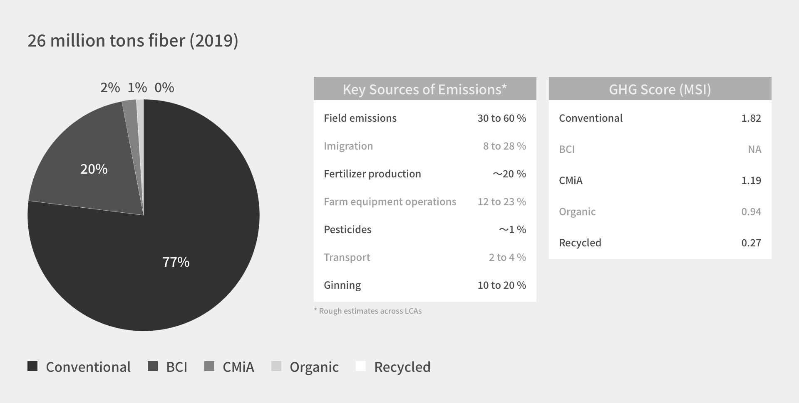

POCのもたらすインパクト
環境にも人権にも配慮した素材、プレオーガニックコットン
プレオーガニックコットン(POC)は、オーガニックコットンになるまでに必要な3年間の移行期間に収穫された綿花です。オーガニックコットンの世界的認証団体であるGOTSの認証基準に則って栽培されており、化学肥料・農薬を使用することなく農家の人権を守り、環境にも配慮しています。 テキスタイルエクスチェンジ (TE) ※１は、移行期間綿（Organic in conversion）拡大のために使う側/作る側への認知度向上を働きかけています。移行期間綿はオーガニックコットンと同様、TEの指定するサステナブル素材にも入っています。
Organic in Conversion：移行期間綿
Pre Organic Cotton：移行期間綿のブランド名
※１ Textile Exchange : 世界中の水・土壌・大気・人類において繊維産業の影響を軽減するため、農業、材料、加工、トレーサビリティ、製品寿命に関する最良の事例を特定し共有するアメリカ・テキサスに本部を置く非営利団体
環境への貢献
プレオーガニックコットンは、化学農薬や肥料を使用しないことによる土壌汚染の軽減や水質汚染の問題を解決するだけではなく、温室効果ガスの削減にも貢献します。
2019年の綿の総生産量は26百万トンでした。そのうち一般綿77%, BCI20%, CMiA2%, オーガニックはわずか1%です。一般綿は、農薬の製造工程で大量の温室効果ガス、通称GHG(Greenhouse Gas)を排出しており、SAC（サステナブル・アパレル連合）※1が定めた繊維製品の素材の環境へのインパクトを評価するためのツールであるHigg MSI(素材の環境へのインパクト評価)※2によると、他の繊維素材に比べてGHG排出量が最大なのは一般綿である、というデータもあります。※aTEXTILE EXCHANGEでは、炭素を土に留める“耕さない”農法（regenerative agriculture)※3や、農薬を使用しない農法が推奨されているほか、農薬を使用しないオーガニック綿、プレオーガニックコットン(POC）の使用で、GHG排出量が削減されると言われています。
※1 SAC：Sustainable Fashion Coalitionの略。アパレル世界大手を中心に小売、アパレルサプライヤー、業界団体、NGO、大学等が加盟する団体で、現在の加盟機関数は200社以上。2009年にパタゴニアとウォルマートが連携しサプライチェーンのサステナビリティ評価イニシアチブを発端とし、2011年に米サンフランシスコで設立された。加盟機関はアディダス、NIKE、リーバイ・ストラウス、バーバリー、ケリング、GAP、H&M、インディテックス、コカ・コーラ等。
※2 Higg MSI (Materials Sustainability Index) : 環境への影響が最も大きいのは素材なので、特定の素材を選んだ際の環境インパクトを把握できるのがHigg MSIです。ナイキが作成したMaterials Sustainability Indexが元になっていて、コットンやポリエステル、シルクなどの79の素材についての環境への影響の情報を持ったデータベースを保持し、それを元に環境に関するインパクトを把握することができます。
※3 regenerative agriculture : 農地の土壌をただ健康的に保つのではなく、土壌を修復・改善しながら自然環境の回復に繋げることを目指す農業を指します。土壌が健康であればあるほど多くの炭素を吸収（隔離）するため、リジェネラティブ農業は気候変動を抑制するのに有用な手法だと考えられています。
※a : 出典：Textile Exchange Climate+ 2030 Strategic Plan (p.44), Round Table Assembly, September 22, 2020
インド農家の健康
化学的な肥料や農薬は環境や人体へ少なからず影響を与えます。綿花は虫にとって甘く、非常に虫が付きやすい為に多くの殺虫剤が撒かれます。また、輪作を行わず毎年栽培するためには肥料を与えなければなりません。手袋もマスクも付けずに扱う危険と撒いた農薬が地下水に入り込みその水を井戸からくみ上げて生活している危険と隣り合わせの生活を行っています。
2018年にはインドの平均寿命は69歳でした。(UNICEF調べ)しかし綿栽培に携わっている人の平均寿命はもっと若く、35歳前後と言われています。綿の生産過程では世界の農薬の18%、殺虫剤の25%が使用されているのです。この数字から綿作には多くの農薬や殺虫剤が撒かれていることがわかります。
インド農家の収入
インドの農家にとっては高価な農薬や種子の購入が非常に家計の負担になっている事実があります。化学農薬や毎年購入しないといけない遺伝子組み換えの種子を購入することは、収穫に左右される安価な綿花販売から得られる収入を圧迫します。中には借金をして返済を目的とした栽培を続ける、というサイクルに陥る農家もあります。また、インドの綿花農家の65%は灌漑設備を持たず雨水に頼って農業を営んでいて、雨が降らないと収穫量が大きく減少します。一方、オーガニック農家は初期投資を掛けずに本来行っていたコンポストや天然の殺虫剤を利用して生産した綿花を販売することで、得られた収入は農家の手元に残ります。また、農薬で傷んだ農地は有機栽培を行うことで年々力を取り戻し健康な畑へと生まれ変わります。そのため、土地の保水力も上がり地下水を利用した灌漑設備への移行を促すことができるようになります。
毎日新聞 2019/5/20 朝刊：https://mainichi.jp/articles/20190520/ddm/007/030/148000c
産経BIZ 2017.8：https://www.sankeibiz.jp/macro/news/170816/mcb1708160500015-n1.htm